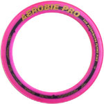

An annulus is a flat ring shaped object, much like the throw-ring shown on the right. One way to think of it is a circular disk with a circular hole in it. The outer and inner circles that define the ring are concentric (share a common center point).The dimensions of an annulus are defined by the two radii R2, R1 in the figure above, which are the radii of the outer ring and the inner 'hole' respectively.
The area of the annulus can be found by subtracting the area of the 'hole' from the area of the overall disk. See Area of an Annulus
The adjective form is 'annular'. So for example the ring on the right could be called an 'annular plastic ring'.